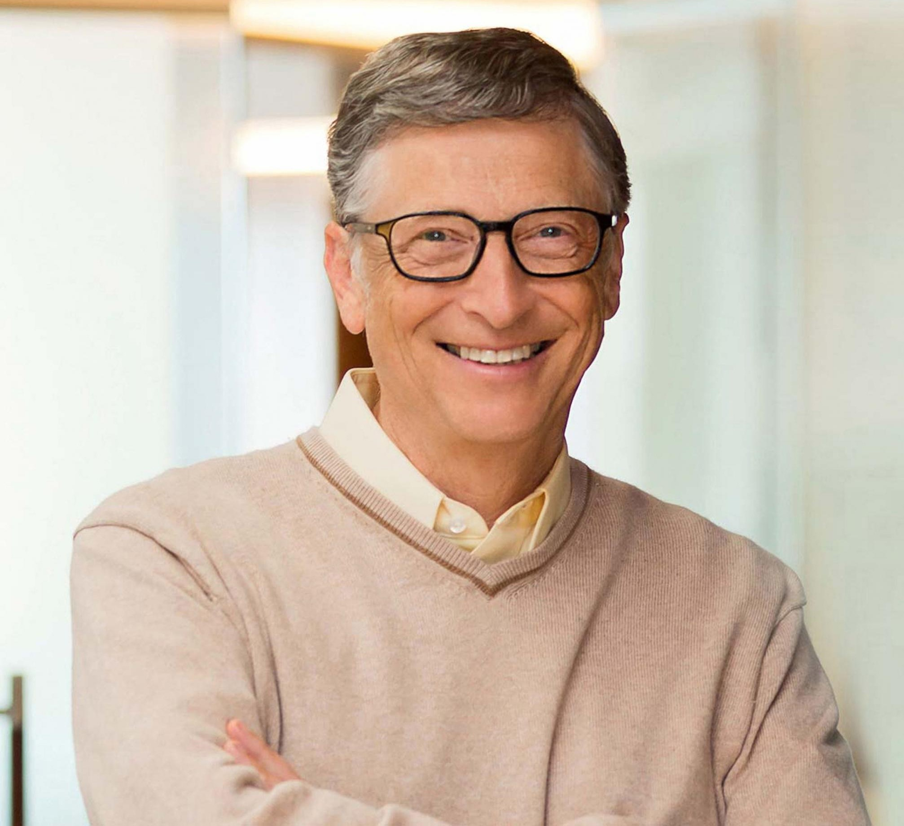

Microsoft Corporation
William Henry Gates III (born October 28, 1955) is an American businessman best known for co-founding the software company Microsoft with his childhood friend executive officer (CEO), president, and chief software architect, while also being its largest individual shareholder until May 2014.[a] He was a
Since 1987, Gates has been included in the Forbes list of the world's top billionaires. From 1995 to 2017, Since leaving operations at Microsoft in 2008, Gates has pursued other business and philanthropic endeavors. year except in 2008 and from 2010 to 2013. In 1999, he became the first ever centibillionaire when his net worth briefly surpassed US$100 billion.
Since 1987, Gates has been included in the Forbes list of the world's top billionaires. From 1995 to 2017, year except in 2008 and from 2010 to 2013. In 1999, he became the first ever centibillionaire his net worth briefly surpassed US$100 billion.
depentmeatn of CS
A and CS
Bocherlor's
depentmeatn of CS
A and CS
Bocherlor's
English(Native)
Sparish(Internedate)